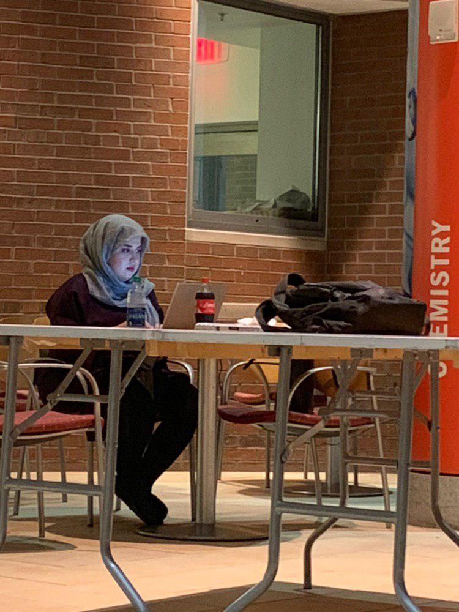

I made a mistake of taking 18 credits in this semester, and now I feel overwhelmed. I should have put less pressure on myself and took less credits. However, I wanted to be able to graduate on May 2020.
In all of the weekends I always go to schools library to work on my homworks right after my work.
I am always on campus during the weekends evenings until late night, close to midnight, finishing up homeworks.
Me working on homeworks on weekends:
